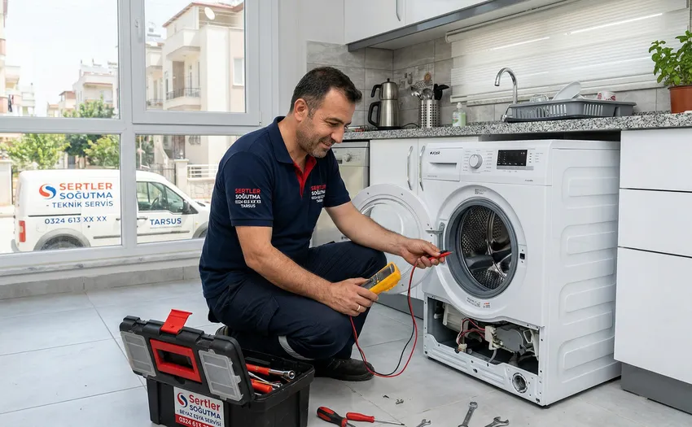
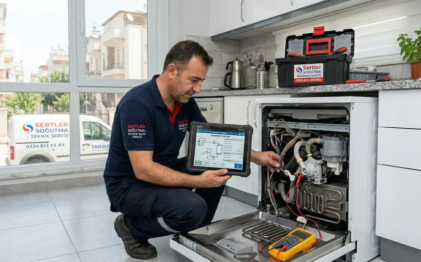
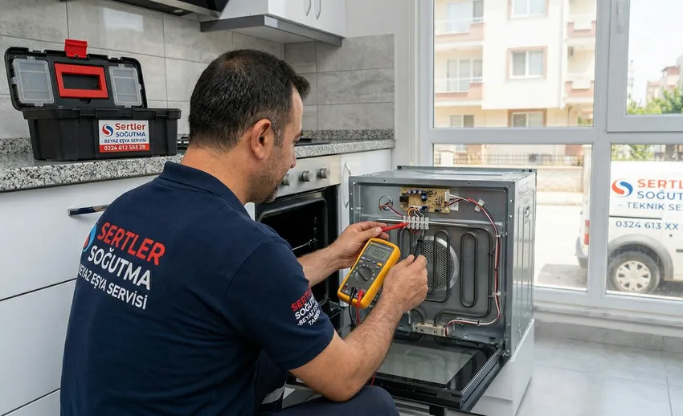

🏠 Evinizdeki Konforun Mimarı: Sertler Soğutma ile Tarsus Beyaz Eşya Servisinde Profesyonel Çözümler!
Günümüz modern dünyasında, ev yaşantısının temel direklerini oluşturan beyaz eşyalar, hayatımızı kolaylaştıran en önemli teknolojik unsurlardır. Mutfaktaki en büyük yardımcımız olan buzdolaplarından, temizlik rutinimizin vazgeçilmezi çamaşır makinelerine kadar her bir cihaz, günlük konforumuzun sürdürülebilirliği için kritik öneme sahiptir. Tarsus gibi hem tarihi dokusu hem de yoğun yerleşimiyle öne çıkan bir bölgede, bu cihazların sorunsuz çalışması bir lüks değil, zorunluluktur. İşte tam bu noktada, Sertler Soğutma olarak bizler, Tarsus Beyaz Eşya Servisi ihtiyacınızı en üst düzey kalite standartlarıyla karşılıyoruz.
Yılların getirdiği tecrübe ve sektördeki yenilikleri yakından takip eden vizyonumuzla, Sertler Soğutma çatısı altında sunduğumuz hizmetler, sadece bir tamir işleminden ibaret değildir. Bizler, cihazlarınızın ömrünü uzatan, enerji verimliliğini artıran ve güvenli kullanım imkânı sunan kapsamlı bir bakım ve onarım ekosistemi sağlıyoruz. Tarsus Beyaz Eşya Servisi denildiğinde akla gelen ilk isim olmamızın arkasında, müşteri memnuniyetini her şeyin üzerinde tutan kurumsal ilkelerimiz yatmaktadır. Bu uzun soluklu rehberimizde, beyaz eşyalarınızın neden profesyonel ellere emanet edilmesi gerektiğini ve Sertler Soğutma'nın sunduğu ayrıcalıkları en ince ayrıntısına kadar inceleyeceğiz.

Tarsus Beyaz Eşya Servisi Hizmet Standartlarımız
Bir teknik servis firmasının kalitesi, sunduğu hizmetin standartları ve bu standartlara ne kadar sadık kaldığıyla ölçülür. Sertler Soğutma, Tarsus Beyaz Eşya Servisi alanında çıtayı her zaman en yukarıda tutmayı hedeflemiş bir kuruluştur. Hizmet standartlarımızın temelini; hız, güven, teknik yetkinlik ve şeffaflık oluşturur. Bir cihaz arızalandığında kullanıcının yaşadığı mağduriyeti çok iyi analiz eden firmamız, müdahale sürecini dakikalarla ölçülebilecek bir hassasiyetle yönetir.
Hizmet standartlarımızı belirlerken, sadece arızayı gidermeyi değil, arızanın tekrar etmemesi için gerekli olan tüm önleyici faaliyetleri de sürece dâhil ediyoruz. Tarsus Beyaz Eşya Servisi kapsamında adresinize gelen teknisyenlerimiz, tam donanımlı araçlarla ve en modern ölçüm cihazlarıyla donatılmıştır. Bu sayede, arıza tespiti (arıza teşhisi) noktasında hata payını sıfıra indiriyoruz. Sertler Soğutma için her bir beyaz eşya, mühendislik harikası birer cihazdır ve her biri özel ilgi gerektirir. Modern çağın gereksinimlerine uygun olarak, dijital kart tamirinden mekanik parça değişimine kadar geniş bir yelpazede standardize edilmiş süreçler takip edilmektedir.
Tarsus Beyaz Eşya Servisi Neden Önemli?
Beyaz eşyalar, karmaşık elektronik devreler ve hassas mekanik parçaların birleşimiyle oluşur. Tarsus'un iklim koşulları, yüksek nem oranları ve zaman zaman yaşanan voltaj dalgalanmaları, bu cihazların performansını doğrudan etkileyen dış faktörlerdir. Bu nedenle, sıradan bir tamirci yerine profesyonel bir Tarsus Beyaz Eşya Servisi ile çalışmak hayati önem taşır. Yanlış yapılan bir müdahale, sadece o anki arızayı gidermemekle kalmaz, cihazın ana kartının yanmasına veya geri dönüşü olmayan motor arızalarına yol açabilir.
Sertler Soğutma olarak vurgulamak isteriz ki; beyaz eşya servisi sadece bozulduğunda aranan bir hizmet olmamalıdır. Periyodik bakımlar, cihazların enerji tüketimini %30'a varan oranlarda düşürür. Örneğin, gazı eksilmiş bir buzdolabı veya kireçlenmiş bir çamaşır makinesi rezistansı, hedef ısıya ulaşmak için iki kat daha fazla enerji harcar. Tarsus Beyaz Eşya Servisi hizmetimiz sayesinde, hem cebinizi korur hem de cihazınızın kullanım ömrünü yıllarca uzatabilirsiniz. Uzman müdahalesi, aynı zamanda ev güvenliği için de kritiktir; zira elektrik kaçakları veya su sızıntıları profesyonelce kontrol edilmediğinde ciddi riskler barındırır.
Tarsus Beyaz Eşya Servisi Fiyat Bilgisi
Kullanıcıların bir teknik servis arayışına girdiğinde en çok merak ettiği konuların başında maliyetler gelmektedir. Ancak, Tarsus Beyaz Eşya Servisi alanında hizmet veren Sertler Soğutma olarak bizler, fiyatlandırma politikamızı her zaman "şeffaflık ve adalet" ilkeleri üzerine kuruyoruz. Beyaz eşya onarımlarında fiyatı belirleyen pek çok değişken bulunmaktadır. Arızanın türü, değişecek parçanın güncel maliyeti, cihazın markası ve modeli, işçilik gereksinimi gibi faktörler toplam tutarı belirler. Bu sebeple, cihazı görmeden veya arıza tespiti yapmadan verilen sabit rakamlar genellikle yanıltıcı olabilmektedir.
Sertler Soğutma, müşterilerine sunduğu ön inceleme sonrasında kapsamlı bir maliyet raporu sunar. Bu raporda yapılacak her işlem ve kullanılacak her parçanın gerekliliği detaylandırılır. Firmamız, ekonomik çözümler sunarken kaliteden asla ödün vermez. Piyasada "ucuz tamir" vaadiyle sunulan ancak yan sanayi parçalarla veya tecrübesiz ellerde yapılan işlemler, uzun vadede çok daha yüksek maliyetli arızalara kapı aralar. Tarsus Beyaz Eşya Servisi maliyetlerini minimumda tutmak için arızanın kaynağını doğru tespit edip, sadece gerekli işlemleri yaparak bütçenizi koruyoruz. Unutulmamalıdır ki; kaliteli bir onarım, cihazınızı yeni bir ürün alma masrafından kurtaran en büyük tasarruf yöntemidir. İşçilik ve parça garantisiyle desteklenen fiyatlandırma modelimiz, bölgedeki en rekabetçi ve kullanıcı dostu yaklaşımlardan biri olarak kabul görmektedir.
Sertler Soğutma ile Garantili Onarım Süreci
Beyaz eşyalarınızın tamirinden sonra en büyük endişeniz "Acaba yine bozulur mu?" olmamalıdır. Sertler Soğutma, bu endişeyi tamamen ortadan kaldıran "Garantili Onarım" sürecini başlatmıştır. Tarsus Beyaz Eşya Servisi ağımızda yapılan her müdahale, kurumsal güvencemiz altındadır. Bu süreç, cihazınızın atölyeye alınması veya yerinde onarılması fark etmeksizin aynı titizlikle yürütülür. Garanti süreci, sadece parça değişimini değil, yapılan işçiliği de kapsayan bütünsel bir koruma kalkanıdır.
Bir cihazın onarım süreci, Sertler Soğutma uzmanları tarafından dijital ortamda kayıt altına alınır. Değişen parçanın seri numarası, işlemin yapıldığı tarih ve garanti süresi müşteriye sunulan servis formunda açıkça belirtilir. Tarsus Beyaz Eşya Servisi sektöründe güvenin sembolü olan firmamız, garanti süresi içinde oluşabilecek (yapılan işleme bağlı) herhangi bir sorunda öncelikli servis hakkı tanıyarak sorunu ücretsiz olarak giderir. Bu, işimize olan güvenimizin ve siz değerli müşterilerimize verdiğimiz değerin en somut göstergesidir.
Sertler Soğutma Uzman Teknik Ekibi
Bir servisin kalitesini belirleyen en temel unsur, teknisyenlerinin bilgi birikimi ve tecrübesidir. Sertler Soğutma bünyesinde çalışan her bir personel, beyaz eşya teknolojileri konusunda özel eğitimlerden geçmiş, sertifikalı uzmanlardır. Tarsus Beyaz Eşya Servisi hizmetimizi yürütürken kadromuzun sürekli güncel kalmasını sağlıyoruz; çünkü beyaz eşya teknolojisi her yıl değişmekte, inverter motorlar, akıllı sensörler ve yapay zeka destekli modüller cihazlara entegre edilmektedir.
Teknik ekibimiz sadece mekanik tamirde değil, aynı zamanda müşteri ilişkileri ve nezaket kuralları konusunda da eğitimlidir. Evinize gelen bir Sertler Soğutma teknisyeni, çalışma alanını temiz tutar, sizi arıza hakkında detaylıca bilgilendirir ve cihazın daha verimli kullanımı için size özel tavsiyeler verir. Tarsus Beyaz Eşya Servisi operasyonlarımızda görev alan arkadaşlarımız, en karmaşık anakart arızalarından en basit filtre değişimlerine kadar her işe aynı ciddiyetle yaklaşır. Uzmanlık, bizim için sadece bir kelime değil, her gün sahada kanıtladığımız bir standarttır.
Sertler Soğutma İletişim Kanalları
Arıza durumunda hızlı aksiyon almak, beyaz eşyanın daha fazla zarar görmesini engellemek için kritik bir adımdır. Bu nedenle Sertler Soğutma, müşterilerine ulaşılabilirliğin en kolay yollarını sunmaktadır. Tarsus Beyaz Eşya Servisi ihtiyacınız olduğunda bize ulaşabileceğiniz birden fazla kanal bulunmaktadır. Teknolojiyi iş süreçlerimize entegre ettiğimiz gibi iletişim süreçlerimize de entegre ediyoruz.

Bize 7/24 aktif olan çağrı merkezimiz üzerinden telefonla ulaşabilir, sesli yanıt sistemimiz veya doğrudan müşteri temsilcilerimizle görüşerek randevu oluşturabilirsiniz. Ayrıca, kurumsal web sitemiz üzerinden "Servis Talep Formu" doldurarak sadece birkaç tıkla bizden destek isteyebilirsiniz. WhatsApp destek hattımız üzerinden cihazınızdaki arızanın fotoğrafını veya videosunu paylaşarak ön bilgi alabilir, konum göndererek ekiplerimizin size daha hızlı ulaşmasını sağlayabilirsiniz. Sertler Soğutma olarak sosyal medya platformları üzerinden de aktif bir iletişim sürdürüyoruz. Tarsus Beyaz Eşya Servisi için randevu alırken sizin için en uygun saati belirlemeniz yeterlidir; biz o saatte orada olacağımızın sözünü veriyoruz.
Tarsus Genelinde Hızlı Servis Ağı
Tarsus'un geniş coğrafyasına hakim olmak, her mahalle ve köye aynı hızla hizmet götürebilmek büyük bir lojistik güç gerektirir. Sertler Soğutma, Tarsus'un en uç noktalarından merkez mahallelerine kadar uzanan devasa bir servis ağına sahiptir. Tarsus Beyaz Eşya Servisi hizmetimizi sunarken "Zaman en büyük hazinedir" prensibiyle hareket ediyoruz. Bozulan bir buzdolabının içindeki yiyeceklerin bozulmaması veya çamaşırların birikmemesi için dakikaların önemini biliyoruz.
Stratejik olarak konumlandırılmış mobil servis araçlarımız sayesinde, çağrınızı aldığımız andan itibaren size en yakın ekibi yönlendiriyoruz. Sertler Soğutma'nın hızlı servis ağı, sadece ulaşım hızıyla değil, aynı zamanda çözüm hızıyla da fark yaratır. Araçlarımızda en çok ihtiyaç duyulan yedek parçaların stoklu bulunması, arızaların büyük bir kısmının ilk ziyarette çözülmesini sağlar. Tarsus Beyaz Eşya Servisi alanında bu denli yaygın ve hızlı bir organizasyon, bizi bölgedeki rakiplerimizden ayıran en güçlü yönümüzdür.
Tarsus Bölgesinde En Çok Tercih Edilen Servis
Yıllar içinde kazandığımız "en çok tercih edilen servis" unvanı tesadüf değildir. Tarsus halkının Sertler Soğutma markasına duyduğu güven, binlerce başarılı onarımın ve mutlu müşterinin eseridir. Bizler, Tarsus Beyaz Eşya Servisi pazarında liderliği korumak için her geçen gün hizmet kalitemizi bir adım ileriye taşıyoruz. İnsanlar bizi neden tercih ediyor? Çünkü bizde her şey net; sürpriz ücretler yok, orijinal parça garantisi var ve en önemlisi muhatap bulma kolaylığı var.
Tarsus'un yerel yapısını ve insanımızın beklentilerini çok iyi analiz ediyoruz. Sıcak kanlı hizmet anlayışımızla profesyonel teknik desteği birleştiriyoruz. Sertler Soğutma referansları, Tarsus'un her mahallesinde, her sokağında karşınıza çıkabilir. Bir komşunun diğerine tavsiye ettiği servis olmak, bizim için en büyük onurdur. Tarsus Beyaz Eşya Servisi denilince insanların aklına gelen o güven duygusunu sarsmamak adına, her işe ilk günkü heyecanımız ve profesyonelliğimizle odaklanıyoruz.
Orijinal Yedek Parça Kullanımı
Beyaz eşya onarımının altın kuralı, doğru teşhis ve doğru parçadır. Sertler Soğutma, parça değişim süreçlerinde tavizsiz bir "Orijinal Yedek Parça" politikası izler. Tarsus Beyaz Eşya Servisi hizmeti verirken kullandığımız her bir rezistans, pompa, motor veya sensör, cihazınızın markasının onayladığı ve fabrika standartlarına uygun ürünlerdir. Yan sanayi veya "çıkma" tabir edilen parçaların kullanımı, kısa süreli çözüm gibi görünse de cihazın diğer bileşenlerine zarar vererek daha büyük felaketlere yol açar.
Orijinal parça kullanımı, cihazın fabrikadan çıktığı ilk günkü performansını korumasını sağlar. Özellikle enerji sınıflarının (A++, A+++ gibi) korunması için parçaların teknik spesifikasyonlara tam uyumlu olması şarttır. Sertler Soğutma olarak biz, değiştirdiğimiz her orijinal parçaya resmi garanti süresi tanımlıyoruz. Tarsus Beyaz Eşya Servisi operasyonlarımızda kaliteyi şansa bırakmıyoruz. Cihazınızın kalbi sayılan motorlardan, en basit kapı contasına kadar her şeyin en iyisini takıyoruz ki, siz de evinizde huzurla oturabilin.
Beyaz Eşyalarınız Sertler Soğutma Güvencesinde
Evimizdeki cihazları birilerine emanet etmek zordur; çünkü onlar hem maddi değeri yüksek hem de evdeki düzenimizi sağlayan araçlardır. Sertler Soğutma, bu sorumluluğun bilincinde olarak tüm operasyonlarını sigortalı ve güvenceli bir şekilde yürütür. Tarsus Beyaz Eşya Servisi dendiğinde sunulan bu güvence, cihazınızın tamir sürecinde ve sonrasında karşılaşabileceği her türlü riski bertaraf eder. Bizim için bir cihazın onarımı, o cihazın gelecekteki performansının da altına imza atmak demektir.
Güvence kapsamımız, sadece teknik arızaları değil, aynı zamanda cihazın fiziksel güvenliğini de kapsar. Taşıma veya yerinde müdahale sırasında oluşabilecek her türlü duruma karşı Sertler Soğutma kurumsal kimliğiyle her zaman arkasındadır. Tarsus Beyaz Eşya Servisi olarak sunduğumuz bu kapsamlı güvence paketi, bizi bireysel çalışan tamircilerden ayıran en net çizgidir. Beyaz eşyalarınız bizim ellerimizdeyken, siz sadece arızanın giderilmesinin ardından yaşayacağınız konforu düşünürsünüz.
Sertler Soğutma ile Ekonomik Çözümler
Ekonomik çözüm demek, en ucuz fiyatı vermek değildir; en uzun süreli faydayı en makul maliyetle sunmaktır. Sertler Soğutma, müşterilerine sunduğu akıllı çözümlerle uzun vadede büyük tasarruflar sağlar. Tarsus Beyaz Eşya Servisi süreçlerimizde, eğer bir cihazın tamir maliyeti yeni bir cihaz alma maliyetine çok yakınsa veya cihazın ekonomik ömrü dolmuşsa, bu durumu müşterimizle dürüstçe paylaşırız. Bizim için dürüstlük, kısa vadeli kazançtan çok daha değerlidir.
Cihazlarınızın performansını artıracak küçük ayarlar, temizlik önerileri ve doğru kullanım teknikleri hakkında verdiğimiz bilgiler ücretsizdir ve bu bilgiler elektrik faturalarınızda ciddi düşüşler sağlar. Sertler Soğutma, bölgedeki her bütçeye uygun servis seçenekleri ve ödeme kolaylıklarıyla Tarsus Beyaz Eşya Servisi ihtiyacını herkes için erişilebilir kılar. Amacımız, yüksek kaliteli teknik servisi Tarsus'un her evine ekonomik ve sürdürülebilir bir şekilde ulaştırmaktır.
Sertler Soğutma Müşteri Yorumları
Bir işletmenin aynası, müşterilerinin onun hakkında söyledikleridir. Sertler Soğutma olarak, internet üzerindeki platformlarda, sosyal medyada ve Google yorumlarında hakkımızda yazılan binlerce pozitif geri bildirimle gurur duyuyoruz. Tarsus Beyaz Eşya Servisi arayan bir kullanıcının yorumlarımızı incelediğinde gördüğü en ortak nokta; "Hızlı geldiler, tertemiz çalıştılar ve sorunumu kökten çözdüler" cümlesidir.
Müşteri yorumları bizim için sadece birer övgü kaynağı değil, aynı zamanda kendimizi geliştirmemiz için birer pusuladır. Her bir geri bildirimi titizlikle inceliyor, varsa eksiklerimizi anında gideriyoruz. Sertler Soğutma'nın şeffaf yönetim anlayışı gereği, tüm kullanıcı deneyimlerine açığız. Tarsus'ta komşunuzun veya bir tanıdığınızın mutlaka bizden aldığı bir hizmet vardır; onlara bizi sorduğunuzda alacağınız yanıt, bizim gerçek referansımızdır. Tarsus Beyaz Eşya Servisi alanındaki başarımızı, sizlerin bu değerli görüşlerine borçluyuz.
Sıkça Sorulan Sorular
Sertler Soğutma, Tarsus ve çevresinde dünya çapında tanınan tüm yerli ve yabancı beyaz eşya markalarına hizmet vermektedir. Marka bağımsız olarak her türlü teknolojik donanıma ve yedek parçaya sahibiz.
Genellikle aynı gün içinde hizmet veriyoruz. Acil durumlarda ise Tarsus'un neresinde olursanız olun, servis ağımızın yoğunluğuna göre 1-2 saat içinde adresinize ulaşmayı hedefliyoruz.
Evet, Sertler Soğutma tarafından değiştirilen tüm orijinal yedek parçalar ve yapılan işçilik, servis formumuzda belirtilen süreler dahilinde (genellikle 1 yıl) garanti altındadır.
Buzdolabının soğutmaması; gaz kaçağı, kompresör arızası, fan motoru problemi veya anakart hatası gibi pek çok nedene bağlı olabilir. Kesin teşhis için Sertler Soğutma uzman ekibinin cihazı yerinde incelemesi gerekir.
Özellikle klima ve kombi gibi cihazlar yılda bir, buzdolabı ve çamaşır makinesi gibi yoğun kullanılan cihazlar ise 2 yılda bir profesyonel bir Tarsus Beyaz Eşya Servisi tarafından kontrol edilmelidir.
Evet, kapıda kredi kartı ile ödeme seçeneğimiz mevcuttur. Müşterilerimize ödeme kolaylığı sağlamak adına farklı seçenekler sunuyoruz.
Acil arıza durumları için nöbetçi ekiplerimiz pazar günleri de dahil olmak üzere haftanın 7 günü hizmet vermeye devam etmektedir.
Ekiplerimiz değişim yapmadan önce parçayı kutusunda size gösterir. Ayrıca servis formumuzda parçanın markası ve seri numarası açıkça belirtilir, bu da Sertler Soğutma güvencesinin bir parçasıdır.
Teknisyenlerimiz arıza tespiti sonrası size dürüst bir rapor sunar. Eğer tamir maliyeti cihazın değerini aşıyorsa, sizi yeni bir cihaz alımına yönlendirir ve isterseniz doğru ürün seçimi konusunda teknik tavsiyelerde bulunuruz.
Evet, Sertler Soğutma olarak Tarsus'un sadece merkezine değil, merkeze bağlı tüm mahalle ve köylerine de hızlı servis aracımızla hizmet ulaştırıyoruz.
Sertler Soğutma olarak, beyaz eşyalarınızın evinizdeki huzuru temsil ettiğini biliyoruz. Bu yüzden Tarsus Beyaz Eşya Servisi ihtiyaçlarınızda sadece bir telefon kadar uzağınızdayız. Kalite, güven ve profesyonelliği bir arada arıyorsanız, doğru yerdesiniz. Bizimle iletişime geçin, konforunuzu riske atmayın!